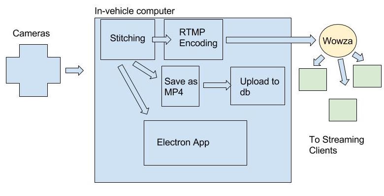

360 Life Stream
Dong Yeop Lee
Jonathan Witten
Luke Fernandez
Spencer Lewis
Project Goal
Create software that takes in videos
of a scene from multiple cameras and streams a
single 360-degree panoramic video that can be viewed remotely in realtime.
Project Components
The following components were developed over the semester to
accomplish our goal:
- Stitcher
- Wowza Server
- Desktop application
- Web application
- Configuration Manager
360ls Design Overview

Stitcher
-
Technologies: Python and OpenCV
-
Challenges:
- Correcting for distortion on our cameras
- Stitching even when there were insufficient key points to match
- Stitching at 30+ FPS
-
Final Product: A stitching algorithm that takes 2 incoming streams
and outputs single panoramic video.
Wowza Server
-
A cloud streaming framework that helps manage live streams
-
We have an AWS instance that is running Wowza, this is the place that the desktop app pushes
its live feed.
-
Wowza then encodes the live stream to MPEG-Dash.
-
Serves as a hub for all live streams coming from the desktop.
Desktop Application
-
Framework: Electron
-
Wanted to develop using familiar technologies (Javascript, HTML, CSS).
-
Electron let us write a desktop application that could work
on many platforms including our target (Linux/ARMv7) with minimal
configuration.
-
With Electron we could use any of the available Front End technologies
to develop our application.
Web Application
-
Purpose: remotely view live streamed and stored videos
-
Technologies: Django/Python with a JavaScript front end hosted on Heroku
-
Live Mode: looks for live streams being pushed by Wowza and renders them in our 360 player.
-
DVR mode: plays saved videos
Configuration Manager
-
We had a lot of trouble getting the required software
(OpenCV, Python, ffmpeg, etc) set up correctly on the Jetson TX1.
-
Wanted to make the configuration process repeatable and
easy to modify.
-
Ansible Playbook that installs and configures
all of the required applications
and binaries.
Demo Overview
- Record and preview a video on the Desktop
- View a recorded video on the Desktop
- Live stream a video
- View the live feed in the web app
- View stitched recorded videos in the web app